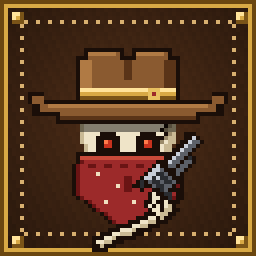

★
A law that hunts you
Five wanted levels. Lawmen investigate, search your last known position, take cover, call reinforcements and send mounted posses. Break line of sight to slip away — or pay off your bounty at a station.

Outlaw County DownloadRob the bank. Hold up the express. Ride hard and stay ahead of the law in a sprawling pixel-art frontier where every bullet leaves a witness.
Free. No account needed. Plays offline, and your progress saves on your own computer.
1893. You call yourself Nate Calder and you rob payrolls with Mara Quill's crew. You don't talk about the past. Then a new Commissioner rides into Outlaw County with his private army, the Iron Covenant, and he knows your real name.
Outlaw County is a top-down open-world western built entirely from hand-coded pixel art. Explore seven frontier towns across eleven regions — snowbound mountain mining camps, a lake port, cattle country, red-rock canyons, white salt flats, badlands and the river border — linked by a railroad that runs the width of the territory. Pick your crimes, earn your bounty and decide how long you can keep running.
Systems that feed into each other: every crime has witnesses, every witness can reach the law, and the law never forgets a face.
Five wanted levels. Lawmen investigate, search your last known position, take cover, call reinforcements and send mounted posses. Break line of sight to slip away — or pay off your bounty at a station.
Hold up general stores, stick up stagecoaches, crack the express car on a stopped train, mug a banker in the street or hit a Covenant payroll on a frozen mountain pass with Mara Quill's crew.
Buy, break or steal fourteen breeds, from mules and Shire drafts to Thoroughbreds, Andalusians and a legendary white horse on the salt flats. Horses have momentum, stamina and health, follow you when close and come running when you whistle.
A full day and night cycle with lamp-lit streets, campfires and lightning storms. Townsfolk keep daily routines, flee gunfire and run to the sheriff when they see you do wrong.
What the Ground Remembers: 21 story missions and an epilogue across every region, with a crew that rides at your side. Between jobs, take stranger jobs in every town, chase wanted posters and bring outlaws in alive.
26 weapons, from derringers and bows with fire arrows to buffalo guns, a scoped long rifle and mounted crank guns. Hold T for the weapon wheel and upgrade barrels, grips and sights. Tailors in four towns sell hats, coats and disguises.
Dodge-roll through gunfire, crouch behind cover, line up precise shots or slow time with Steady Nerves. Sharpshooters, brutes, dynamiters and gunslingers flank, retreat and sometimes surrender. Earn reputation and pick perks as you go.
These views are drawn live by the game's own renderer — the same code you play.
Outlaw County sits in the corner of a map sixteen times its size. Roads wind out through mountain passes to Silver Crown and Port Harlow, down through Ranch Country to Fort Granger, across the salt to the ghost town of Hollow Creek and over the Rio Bravo to San Lucero. Unexplored country stays blank on your map until you ride it, and you can set your own waypoints.
Every weapon handles differently — thumb the hammer on a single-action, work the lever between rifle shots, or empty both barrels of the coach gun.
Keyboard and mouse. The game scales to any screen size and supports fullscreen.
Outlaw County is a love letter to frontier crime stories, built from scratch with HTML5 Canvas and plain JavaScript. No game engine, no external assets: every building, horse, gunshot and campfire is drawn or synthesized by code at runtime.
Outlaw County runs as its own Windows app. It works fully offline and keeps your saves on your own machine.